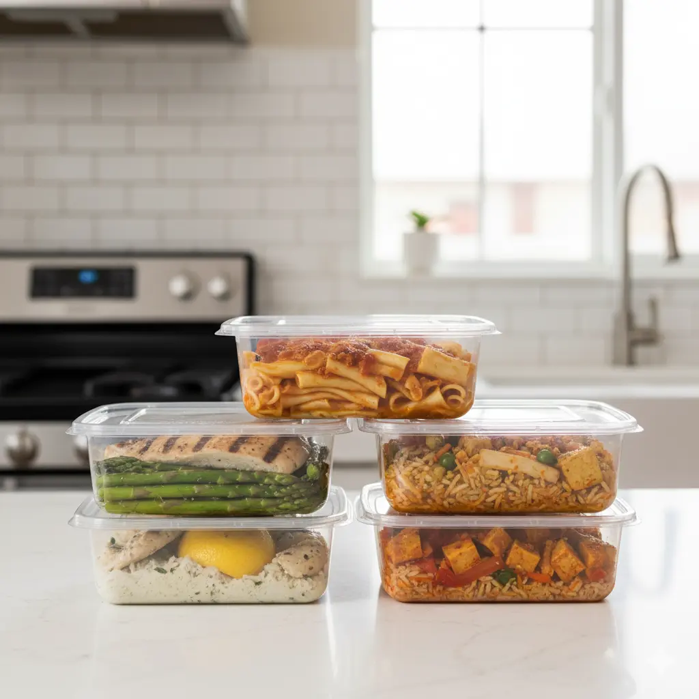
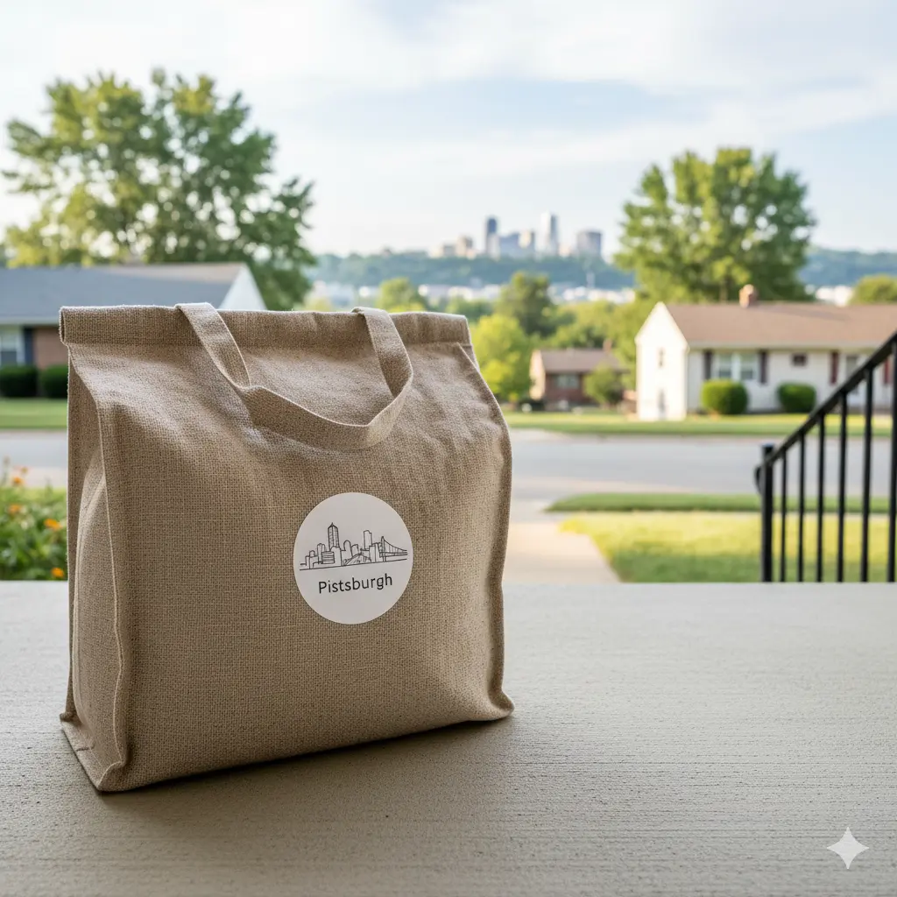

Flexible Meal Prep Pittsburgh: Easy Meals, Great Nutrition, No Subscription Needed!
Hey Pittsburgh families! Juggling busy schedules and healthy eating can be tough, right? Our no-subscription meal prep service is here to change that. We bring you chef-prepared, on-demand family meals that cut out the stress, save you time, and boost your nutrition. You’ll get total freedom, awesome seasonal menus, and we’re super eco-friendly, totally shaking up dinner routines across the Steel City.
Quick Look: How We Make Your Family Dinners Way Better!
Let’s check out the awesome perks of flexible meal prep, all designed to make your family feel great:
Save So Much Time!
You’ll consistently get back an average of 5-10 hours every week! No more grocery shopping, meal planning, endless cooking, or scrubbing dishes. That means more precious quality time with your family.
Eat Better, Feel Better!
You’ll get balanced, chef-prepared meals, all checked out by certified nutritionists. They’re made for all sorts of dietary needs and tastes, making sure you get all the good stuff your body needs.
Total Freedom!
Order exactly what you want, exactly when you need it. No commitments, no recurring fees, and you’re totally in charge to change your meal plan to fit your busy schedule.
Less Stress, No More Evening Brain Drain!
Stop the evening brain drain from daily meal decisions and cooking. You’ll have calmer, more connected family evenings and just feel better all around.

Why Pittsburgh Families Love Our No-Subscription Meal Delivery?
Flexible meal delivery totally changes how easy dinner can be! It frees families from annoying subscriptions and strict schedules. This way, you can order exactly what you want, when you want it, cut down on food waste, and it fits perfectly with Pittsburgh’s busy lives.
How Flexible Meal Prep Saves You Tons of Time
Flexible meal prep really does save families an average of 5-10 hours every week! We get rid of grocery shopping, prepping ingredients, and all that cleanup, so you get more family and personal downtime.
- No More Sourcing: Meals arrive fully prepared, so you skip grocery runs, recipe hunting, and portioning ingredients.
- Perfectly Portioned: Our meals are carefully pre-portioned, making meal management easy and helping you hit your dietary goals.
- Ready-to-Heat: Our eco-friendly packaging means meals are ready in minutes, turning dinner into a quick, satisfying experience.
All these benefits together make your evening routines so much better, giving you more time for family, hobbies, and much-needed rest.
How No Commitment Makes Meal Planning Super Flexible
No-subscription meal prep gives families total control! You can easily change your order for last-minute guests, unexpected trips, or schedule shifts. This means your meal plans always match up with real life, keeping your fridge perfectly stocked.
- Order When You Want: Add or skip meals without any penalties, complicated cancellations, or minimum order rules.
- Easy to Try New Things: Discover new dishes, different cuisines, and exciting flavors without any commitment, growing your family’s food adventures.
- Flexible Portions: Easily adjust portion sizes for your family’s changing needs or dietary goals, making sure you eat just right and waste less.
This freedom gets rid of scheduling stress, makes sure mealtime can adapt to real-life changes, helps you eat better, and gives you peace of mind.
Why Flexible Meals Are Great for Healthy Eating
Flexible meal options perfectly blend chef-made recipes with expert nutrition advice, helping families consistently hit their different dietary goals. Our culinary pros carefully prepare each meal, and certified nutritionists or dietitians thoroughly check them for amazing taste and health.
- Calorie-Controlled: Our carefully measured portions support mindful eating, weight management, and sticking to your diet.
- Balanced Nutrients: We’ve got the right amounts of lean proteins, complex carbs, and healthy fats to keep your energy up and help you feel full.
- Lots of Good Stuff: A wide variety of fresh, seasonal, fiber-packed veggies means you get diverse, wholesome meals and all the nutrients you need.
Flexible meal prep really helps you build consistent healthy eating habits, supporting long-term well-being and making your family’s diet way better.
Big research in the International Journal of Behavioral Nutrition and Physical Activity, with over 40,000 people, clearly showed that consistent meal planning means healthier eating, more food variety, and less chance of being overweight or obese. This strong research proves how good flexible meal options are for you, directly connecting planned eating to better diet quality and long-term health.
Plus, top registered dietitians say that “pre-prepared, balanced meals cut down on the mental effort of healthy eating, making it a sustainable practice for busy individuals and families.” This expert agreement really highlights how convenience is key to eating healthy all the time.
How Flexible Meal Prep Takes the Stress Out of Dinner for Busy Pittsburgh Families
Flexible meal delivery really cuts down on mental load and decision fatigue by handling all the meal planning and cooking. This frees up your brainpower, letting families focus on other important tasks, their own well-being, and quality time together.
- Easy Ordering: Our super simple online system makes picking meals quick and enjoyable.
- Dependable Delivery: Our consistent delivery times fit perfectly with your busy schedule, making sure your meals arrive on time and you always have food.
- Hardly Any Cleanup: Pre-prepared meals and eco-friendly packaging drastically cut down on after-dinner chores, leading to calm evening routines.
Fewer meal tasks mean calmer evenings, less worry, more quality time, stronger family connections, and better mental well-being.
How Our Flexible Meal Delivery Works in Pittsburgh: Super Easy Steps!
- Pick & Order: Check out our easy-to-use online menu with individual meals, family bundles, and options for specific diets. Get the dishes and amounts you want, totally on your terms: no subscription, no minimums.
- Chef Preps & Packs: Our team of talented local Pittsburgh chefs carefully prepares each dish using fresh, mostly local ingredients. Meals are expertly cooked and packed in smart, heat-and-eat, eco-friendly containers to keep them super fresh and convenient.
- Easy Delivery & Enjoyment: Your freshly prepared meals arrive within your chosen flexible time window, staying perfectly cold. Just reheat them following our simple instructions to enjoy restaurant-quality dinner at home with hardly any effort.
What Awesome Flexible Family Meal Options Do We Have in Pittsburgh?
Pittsburgh’s flexible meal prep offers a huge, changing variety of options, all carefully made to fit your family’s different dietary preferences, tastes, and how you like to order. We guarantee personalized nutrition and meals you’ll love!
A la Carte Meals: Order Just What You Want, No Subscription!
A la carte meals give you total freedom! Families can pick and mix individual dishes without needing a full plan. They’re perfect for those spontaneous cravings, adding to meals you already have, or pleasing everyone’s taste buds at home.
Meals for Every Diet: We've Got Your Family Covered!
Our prepared meals cover a whole range of dietary needs, including gluten-free, vegan, keto, paleo, and low-sodium options. Our culinary experts carefully design them, and nutritionists thoroughly check them to make sure they taste amazing and stick to your diet, helping you get personalized nutrition.
- Gluten-Free: Certified gluten-free dinners, ensuring they’re safe, full of flavor, and have no cross-contamination for sensitive eaters.
- Vegan: Lots of veggie-packed, complete plant protein, and creative meat-free options that are vibrant and filling.
- Keto & Paleo: Low-carb, high-protein, healthy-fat meals carefully made to support specific lifestyle diets and health goals.
- Allergen-Friendly: We use clear labeling and strict preparation rules for common allergens (like dairy-free, nut-free) to keep you safe and give you total peace of mind.
These special menus mean no more researching ingredients or changing recipes. They fit perfectly into your weekly orders and help you reach all sorts of health goals.
How Our Family Bundles Make Meal Planning Easy for Pittsburgh Households
Family bundles smartly combine multiple servings into single orders, making sure you get consistent portions and complete menus for several meals. This makes planning super easy for bigger families, busy weeks, or special events, helping with food security and cutting down on decision fatigue.
Customize Your Meals: Make Them Just How You Like!
Customization gives families the power to fine-tune meals, making it easy to swap proteins, adjust spice levels, or add extra veggies. This makes sure each dish perfectly matches individual tastes, dietary needs, and nutrition goals, boosting satisfaction and cutting down on food waste.
- Protein Swaps: Easily switch proteins (like chicken for tofu, beef for fish) to fit your preferences or dietary needs.
- Add More Sides: Include extra portions of healthy sides (like quinoa, roasted broccoli) to feel fuller or get more nutrients.
- Flavor Adjustments: Ask for changes to sauces and seasonings for kid-friendly tastes, specific spice preferences, or less salt.
- Allergen Needs: We handle specific allergen requests very carefully with dedicated kitchen rules and clear communication.
This personalization makes dining better and supports sustainability by cutting down on unwanted food.
How Our Flexible Meal Prep Stacks Up Against Other Pittsburgh Services
Flexible meal prep really stands out from traditional meal kits, grocery shopping, and eating out. We offer awesome benefits carefully made for modern Pittsburgh families who want convenience, quality, and total freedom in their meals.
Cool Perks of Our No-Subscription Meal Delivery
- Truly One-Time Ordering: You’re totally in control with no minimum commitments, hidden fees, or recurring charges. Order exactly when you need it, fitting perfectly with your busy schedule.
- Local Chef Magic: Our menus are carefully put together by talented Pittsburgh chefs, using local tastes and regional produce for authentic, amazing meal experiences.
- Always Changing Seasonal Menus: Our weekly rotating menus feature fresh, in-season ingredients, ensuring you always get new meal varieties and supporting sustainable eating.
- Fully Prepared & Ready-to-Heat: Meals arrive fully cooked, perfectly seasoned, and ready to heat – unlike regular meal kits – saving you tons of time and effort.
- Less Waste, Less Impact: Our perfectly portioned meals and smart ingredient sourcing really cut down on household food waste, helping create a more sustainable food system.
These special features make our service perfect for Pittsburgh families who want convenience, gourmet quality, and flexible diets without the usual industry hassles.
How Our Prices Compare to Groceries and Subscription Services
While our per-serving cost might look a bit higher than just buying groceries, it gives you way better value! You save time, waste less food, get chef-prepared convenience, and avoid impulse buys. It’s consistently a smarter financial choice than eating out all the time.
By making prep easy, cutting out cooking, and skipping those restrictive weekly fees, our on-demand meals offer amazing value. They often end up being better for your wallet and your overall well-being than eating out a lot or dealing with the hidden costs of regular grocery shopping.
What Pittsburgh Families Are Saying About Our Flexible Meal Prep!
Happy Pittsburgh families all agree: our flexible meal prep is reliable, tastes amazing, and really cuts down on stress. These services don’t just give you meals; they give you serious peace of mind and help build stronger family connections around the dinner table.
Families consistently tell us they have calmer evenings, discover new favorite recipes, and see a big improvement in their overall quality of life and how well they stick to healthy eating.

Where Do We Deliver in Pittsburgh? We've Got You Covered!
Our flexible meal prep services are all about serving Pittsburgh’s diverse communities, making sure you get easy and reliable access to healthy, chef-prepared meals across a big and growing service area.
Pittsburgh Neighborhoods We Deliver To (No Subscription Needed!)
Our delivery zones cover central city areas and lots of surrounding suburbs, making sure we’re widely accessible:
- Central & East End: Shadyside, Squirrel Hill, Oakland, Bloomfield, Lawrenceville, Friendship, Highland Park, Point Breeze, Regent Square.
- South Hills: Mt. Lebanon, Upper St. Clair, Bethel Park, Peters Township, Brookline, Dormont, South Fayette, Scott Township.
- North Hills: Cranberry Township, Wexford, McCandless, Ross Township, Franklin Park, Gibsonia, Pine Township.
- West & Airport Corridor: Robinson Township, Moon Township, Coraopolis, Kennedy Township, Findlay Township.
- River Towns & Beyond: Oakmont, Fox Chapel, Aspinwall, Sewickley, Edgewood, Verona.
We recommend checking your specific address on our website to confirm your delivery zone and estimated times.
How Our Delivery Schedule Fits Your Busy Family Life
Our delivery schedule is carefully designed to fit modern family routines, giving you awesome flexibility and predictability for super convenience and perfect cold chain integrity.
- Flexible Windows: Pick convenient one-hour delivery windows throughout the day, fitting around appointments, school pickups, or work commitments.
- Evening Drop-offs: Evening delivery options, usually after 5 PM, make sure meals arrive when parents are home.
- Weekend Slots: We have special weekend delivery slots for relaxed receiving or stocking up for the week.
- Contactless Delivery: Our contactless delivery options leave meals securely packaged at your doorstep for ultimate convenience.
On-demand scheduling guarantees your meals arrive exactly when you need them, cutting down on disruption and making things super convenient for busy households.
Our Delivery Areas and Service Hours
Most flexible meal prep services in Pittsburgh have long hours to fit different routines and make sure everyone can get their meals:
- Delivery Days: Usually Monday through Saturday; some places even offer Sunday options.
- Standard Hours: Our delivery windows usually run from 10 AM to 8 PM, with specific time slots you can pick.
- Sunday Options: Some providers offer Sunday pickups at special community spots or limited Sunday delivery times.
These extended hours fit perfectly with different family routines, work schedules, and weekend plans, making sure your fresh meals arrive right on time.
Got Questions? We've Got Answers About No-Subscription Meal Prep in Pittsburgh!
Here are answers to common questions families ask before their first order, giving you clear and helpful info so you feel totally confident.
Do I Have to Sign Up for a Subscription to Order Meals?
Nope, no commitment needed! Our service gives you total freedom: place one-time orders as often as you like, without subscription plans, long-term contracts, or cancellation fees. Order weekly, bi-weekly, for special occasions, or whenever you want. It’s all carefully made to fit your specific needs.
Can I Order Meals for Special Diets Whenever I Want?
Yes, absolutely! Our menus include a huge range of dietary needs. Options for gluten-free, vegan, keto, paleo, low-sodium, and other special diets are easy to find and clearly marked. You can easily mix and match these specialized meals into any order, making sure every family member gets personalized nutrition.
What's the Cost for Flexible Meal Delivery in Pittsburgh?
Meal prices usually range from $9 to $11 per serving. This great price includes big time savings, awesome chef-prepared quality, healthy nutrition, and less food waste compared to cooking yourself or eating out.
Is Flexible Meal Prep Good for Both Kids and Parents?
Yes, totally! Our meals are carefully made for all sorts of family tastes, often with milder spice levels, familiar flavors, and balanced nutrition that kids and adults will love. Many dishes can even be adjusted to please the pickiest eaters.
How Fresh Are Our Ingredients?
Super fresh ingredients are our top priority! We usually get ingredients daily from local Western Pennsylvania farms and trusted regional suppliers, making sure they’re perfectly ripe, taste amazing, and are packed with nutrients. Our farm-to-fork approach means less travel time and the best quality ingredients.
What About Food Safety and Our Packaging?
We follow really strict food safety rules from where we get our ingredients to when we deliver. Meals are made in licensed commercial kitchens, and our packaging is designed to keep optimal temperatures during delivery, making sure everything stays cold and safe until you get it. Containers are sealed and clearly labeled with reheating instructions.
How Flexible Meal Prep in Pittsburgh Helps You Eat Healthy and Sustainably
Beyond just being convenient, our flexible meal prep services in Pittsburgh are all about boosting your family’s health and helping the environment. We’re building a responsible and conscious food system.
Local Ingredients in Our Chef-Prepared Meals
Our chefs work closely with local Western Pennsylvania farms, artisan producers, and trusted suppliers, creating menus based on regional quality, what’s in season, and authentic flavor. This commitment boosts our local food economy and helps us cut down on our carbon footprint.
- Seasonal Produce: Fresh, in-season produce from nearby farms means peak freshness, lots of nutrients, and less travel time for your food.
- Pasture-Raised Proteins: Ethically sourced meats, poultry, and eggs from regional farms that care about animal welfare and sustainable practices.
- Artisan Grains & Dairy: Locally produced grains, cheeses, and dairy products support local businesses and bring out unique regional flavors.
- Sustainable Seafood: Responsibly sourced seafood, following rules that promote healthy ocean ecosystems and sustainable fishing.
This strong farm-to-table approach makes food taste better and more nutritious, while also really boosting the local economy and improving community food security.
How Flexible Meal Prep Helps Your Family Eat Better
Each dish is carefully put together by culinary and nutrition experts to support your family’s consistent health goals, focusing on smart nutrition and a balanced diet.
- Balanced Nutrients: The right amounts of lean proteins, complex carbs, and healthy fats ensure steady energy, help you feel full, and keep your metabolism balanced.
- Perfect Portion Control: Carefully measured meals help with calorie management, prevent overeating, and support sticking to your diet, encouraging mindful eating.
- Lots of Veggies: Plenty of diverse, colorful vegetables guarantee high fiber, essential vitamins, minerals, and antioxidants for great digestion and immunity.
- Less Processed Stuff: We focus on whole, unprocessed ingredients to minimize added sugars, unhealthy fats, and artificial additives, promoting cleaner eating.
This complete approach makes healthy eating easy, enjoyable, and sustainable for the whole family, supporting long-term well-being and better dietary quality.
How We Keep Things Green: Sustainable Practices in Our Kitchen and Packaging
We’re super dedicated to protecting the environment, using sustainable practices throughout our whole operation to create a circular economy and lessen our impact on the planet.
- Reusable Insulated Bags: Our strong, reusable insulated bags for delivery really cut down on single-use plastic waste and promote a return-and-reuse system.
- Compostable & Recyclable Containers: Meals are packaged in certified compostable, recyclable, or recycled materials, cutting down on landfill waste.
- Minimal-Waste Kitchens: Our super efficient kitchen rules minimize food waste, and we often donate extra ingredients to local food banks or compost them.
- Smart Delivery: Our delivery routes are carefully planned to reduce fuel use, cut down on carbon emissions, and make delivery more efficient.
- Clear Supply Chain: We prioritize working with suppliers who are committed to ethical sourcing and sustainable farming practices.
These combined practices show our deep commitment to eco-friendly meal delivery, a healthier planet, and a more sustainable future for Pittsburgh families.
Change Your Dinner Routine Today: Enjoy Total Food Freedom in Pittsburgh!
Modern Pittsburgh family life needs quick, efficient solutions. No-subscription meal prep helps households get back precious time, enjoy healthy, chef-made meals, and make dinner routines super easy and enjoyable.
With clear pricing, diverse nutritionist-guided menus, wide neighborhood coverage, and a strong commitment to sustainable practices, on-demand meal prep in Pittsburgh turns hectic evenings into enjoyable, stress-free family gatherings. Say goodbye to dinner stress; say hello to better living, deeper connections, and awesome nutrition!